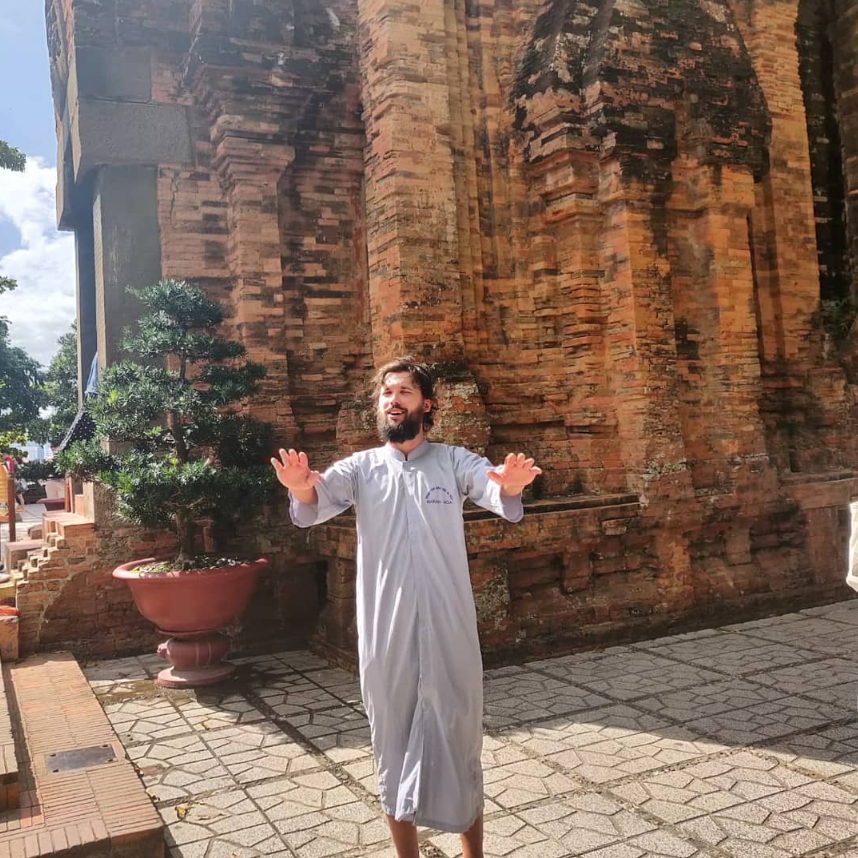

Joonas the traveller
I Love travelling! Me and my girlfriend love to travel and are actively seeking new places to visit. One day i wish to visit the America's
I Love travelling! Me and my girlfriend love to travel and are actively seeking new places to visit. One day i wish to visit the America's